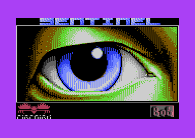
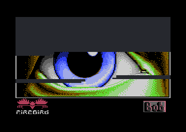
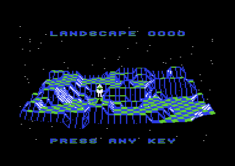
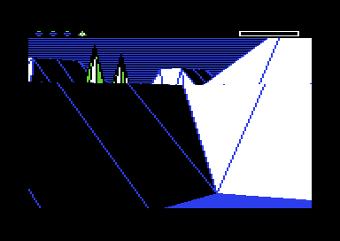

<meta charset="utf-8">
<meta name="viewport" content="width=device-width, initial-scale=1">
<title>The Sentinel</title>
<link rel="preconnect" href="https://fonts.googleapis.com">
<link rel="stylesheet" href="https://fonts.googleapis.com/css2?family=Lato:wght@400;700;900&family=IBM+Plex+Mono:wght@400;500&display=swap">
<style>
:root{
  --bg:#23262d; --paper:#e9e7e1; --surface:#ffffff; --surface-2:#f1efea; --line:#d5d3cc; --line-soft:#e0ded8;
  --ink:#2f3136; --ink-soft:#55585f; --ink-mute:#80838a;
  --link:#1f5fa8; --link-hover:#154480; --accent:#1f5fa8;
  --amber:#c25a00; --cyan:#1f5fa8; --coral:#d04a3a; --green:#2a8a4a; --violet:#4a5bd6; --hl:#fff0c2;
  --chip:#2f3136; --chip-ink:#ffffff;
  --c64blue:#40318d; --c64grey:#686868;
  --fd:'Lato',system-ui,sans-serif; --fb:'Lato',system-ui,sans-serif; --fm:'IBM Plex Mono',ui-monospace,Menlo,monospace;
  --col:1080px; --gx:68px; --fs:17px; --lh:1.6; --hw:900; --h1:46px; --h2:26px; --sy:48px; --pp:26px; --r:10px;
  --plate-shadow:0 1px 2px rgba(0,0,0,.05),0 4px 14px rgba(0,0,0,.05);
}
*{box-sizing:border-box}
html{background:var(--bg);min-height:100%}
body{background:var(--paper);color:var(--ink);font-family:var(--fb);font-size:var(--fs);line-height:var(--lh);max-width:var(--col);margin:0 auto;min-height:100vh;padding:0 0 4rem}
h1,h2,h3{font-weight:var(--hw);letter-spacing:-.01em;text-wrap:balance;color:var(--ink);margin:0}
h3{font-size:19px;margin:28px 0 8px}
.wrap{padding:0 var(--gx)}
.hero{padding:48px var(--gx) 8px;text-align:left}
.eyebrow{font-family:var(--fm);font-size:12px;letter-spacing:.08em;text-transform:uppercase;color:var(--ink-mute);margin:0 0 10px}
.hero h1{font-size:var(--h1);line-height:1.15;letter-spacing:-.02em;margin:0 0 14px}
.hero .sub{margin:0 0 .6em;color:var(--ink-soft)}
section{padding:var(--sy) 0 24px}
section:last-of-type{border-bottom:none}
.fig{font-family:var(--fm);font-size:12px;letter-spacing:.08em;text-transform:uppercase;color:var(--ink-mute);margin:0 0 10px}
h2.t{font-size:var(--h2);margin-bottom:12px}
.lede{color:var(--ink-soft);margin:0 0 30px}
.plate{background:var(--surface);border:1px solid var(--line);border-radius:var(--r);padding:var(--pp);box-shadow:var(--plate-shadow)}
.cap{font-size:14px;color:var(--ink-mute);margin-top:14px;line-height:1.55}
.cap b{color:var(--ink);font-weight:700}
code{font-family:var(--fm);font-size:.82em;background:var(--chip);color:var(--chip-ink);border-radius:4px;padding:2px 6px;white-space:nowrap}
a{color:var(--link)}
/* controls */
.ctl{display:flex;flex-wrap:wrap;gap:8px 14px;align-items:center;margin:0 0 14px;font-size:14px}
.ctl .grp{display:flex;gap:4px;align-items:center;flex-wrap:wrap}
.ctl label{color:var(--ink-soft)}
button.b{font:500 13px var(--fm);background:var(--surface-2);color:var(--ink);border:1px solid var(--line);border-radius:6px;padding:5px 10px;cursor:pointer}
button.b:hover{border-color:var(--ink-mute)}
button.b[aria-pressed="true"]{background:var(--chip);color:var(--chip-ink);border-color:var(--chip)}
input.num{font:500 18px var(--fm);width:5.2em;padding:4px 8px;border:1px solid var(--line);border-radius:6px;text-align:center;letter-spacing:.08em}
input[type=range]{width:220px}
canvas{max-width:100%;display:block}
.cv-dark{background:#000;border-radius:6px}
.cols{display:grid;grid-template-columns:minmax(0,1fr) 260px;gap:22px;align-items:start}
@media (max-width:880px){.cols{grid-template-columns:1fr}}
.stats{font-size:14px;line-height:1.5}
.stats dt{font-family:var(--fm);font-size:11px;letter-spacing:.06em;text-transform:uppercase;color:var(--ink-mute);margin-top:10px}
.stats dd{margin:0}
.code8{font:500 26px var(--fm);letter-spacing:.12em;color:var(--ink)}
.tip{position:absolute;pointer-events:none;background:var(--chip);color:#fff;font:12px/1.4 var(--fm);padding:6px 8px;border-radius:6px;white-space:nowrap;display:none;z-index:5}
.rel{position:relative}
.tablewrap{overflow-x:auto}
table.d{border-collapse:collapse;font-size:14px;width:100%;margin:6px 0}
table.d th,table.d td{text-align:left;padding:6px 10px;border-bottom:1px solid var(--line-soft);vertical-align:top}
table.d th{font-family:var(--fm);font-size:11px;letter-spacing:.06em;text-transform:uppercase;color:var(--ink-mute);font-weight:500}
.seq{display:flex;flex-wrap:wrap;gap:4px;font:12px var(--fm)}
.seq span{padding:2px 5px;border-radius:4px;background:var(--surface-2);border:1px solid var(--line-soft)}
.seq span.k{background:var(--hl);border-color:#e0c46a;font-weight:500}
.bars{display:flex;gap:6px;align-items:flex-end;height:120px;margin:10px 0 4px}
.bars div{flex:1;background:var(--accent);border-radius:3px 3px 0 0;position:relative}
.bars div span{position:absolute;bottom:-20px;left:0;right:0;text-align:center;font:12px var(--fm);color:var(--ink-soft)}
.cards{display:grid;grid-template-columns:repeat(auto-fit,minmax(280px,1fr));gap:16px}
.card{background:var(--surface);border:1px solid var(--line);border-radius:var(--r);padding:18px 20px;box-shadow:var(--plate-shadow)}
.card h3{margin:0 0 6px;font-size:17px}
.card p{margin:0 0 8px;font-size:15px}
.card.wide{grid-column:1/-1}
.card.wide .imgs figure{max-width:420px}
.imgs{display:flex;gap:14px;flex-wrap:wrap}
.imgs figure{margin:0;flex:1;min-width:220px}
.imgs img{width:100%;image-rendering:pixelated;border-radius:6px;display:block}
.imgs figcaption{font-size:13px;color:var(--ink-mute);margin-top:6px}
.mm text{font:11px var(--fm)}
.note{font-size:14px;color:var(--ink-soft)}
.unsure li{margin-bottom:6px}
</style>
<!-- tabs -->
<header class="hero">
  <p class="eyebrow">Commodore 64 · 1986 · Firebird</p>
  <h1>The Sentinel</h1>
  <p class="sub">The Sentinel keeps more in memory than it uses: three fifths of the tape's loading picture, pieces of BBC BASIC, and font characters it never prints. It also prints every zero as the letter O.</p>
</header>
<main class="wrap">

<section id="secrets">
  <p class="fig">01 · Secrets, quirks and leftovers</p>
  <h2 class="t">Found in the game's memory</h2>
  <p class="lede">Each of these is in memory at the address given; the ones marked live were also seen in the emulator.</p>
  
<div class="cards">
<div class="card wide"><h3>The loading screen is still in memory</h3>
<p>While the 1986 tape loads, it shows a picture: a huge eye under the game's name, with the
Firebird logo and the artist's signature, "Bob". In the copy analysed here the same picture is
still in memory while the game plays. The load left its bitmap at <code>$5C73</code>-<code>$7BB2</code>;
the game then put its play screen's character sets over the top of it, its sprites over a strip
through the middle, and its screen over the colours that follow it. The rest,
<code>$6800</code>-<code>$6FFF</code> and <code>$7100</code>-<code>$7BB2</code>, is three fifths of
the bitmap, the same byte for byte as the tape's, and the game never uses it.</p>
<div class="imgs"><figure><figcaption>The loading screen, as the tape shows it</figcaption></figure><figure><figcaption>The part still in the game's memory, in the tape's colours</figcaption></figure></div></div>

<div class="card wide"><h3>The overview leaves out the player and the trees</h3>
<p>The landscape is shown from above before the player's robot and the trees are placed
(<code>$8858</code>, then <code>$1450</code> and <code>$147D</code>), so the overview never shows
them. Live: the overview of landscape 0000 has the Sentinel and no trees; the first view from the
robot has trees in it.</p>
<div class="imgs"><figure><figcaption>The overview</figcaption></figure><figure><figcaption>The first view: two trees</figcaption></figure></div></div>

<div class="card"><h3>Past landscape 9999, the count starts again</h3>
<p>The next landscape is the current number plus the energy left, added in binary-coded decimal
(<code>$1A87</code>-<code>$1A95</code>). The carry out of the top digit is dropped, so 9990 with 15
units left leads to 0005.</p>
<p id="nextForm" style="font-family:var(--fm);font-size:14px;line-height:2.2">Landscape <input class="num" id="nxL" value="9990" style="font-size:14px;width:4.4em"> + energy <input class="num" id="nxE" value="15" style="font-size:14px;width:3em"><br>next landscape <b id="nxOut"></b></p></div>

<div class="card"><h3>Zero is printed as the letter O</h3>
<p>The digit printer swaps 0 for O (<code>$31F6</code>), in the number entry too. Live: every
prompt and every code the game prints. The code of landscape <input class="num" id="ocL" value="0000" maxlength="4" inputmode="numeric" aria-label="landscape number" style="font-size:14px;width:4.4em">, as the game prints
it (white) and with the font's own zero (yellow):</p>
<canvas id="ocv" width="496" height="32" class="cv-dark"></canvas></div>

<div class="card"><h3>A U-turn plays the end of the transfer tune</h3>
<p>The transfer tune starts at offset 25 of the music (<code>$1B82</code>); the U-turn starts the
same tune at offset 40 (<code>$1B3C</code>), its last two chords. Live: a stop on the tune starter,
<code>$888F</code>, caught the U-turn with 40 in A. Both are in the <a href="index.html#sound">sound player</a> on How it works.</p></div>

<div class="card"><h3>Any action wakes the enemies, even one that fails</h3>
<p>The enemies wait until the first action key: absorb, create, transfer, hyperspace or U-turn
(<code>$12E1</code>). The key counts before the action is tried, so a refused creation wakes them
too. Panning never does. Live, with a U-turn.</p></div>

<div class="card"><h3>BBC BASIC, inside a C64 game</h3>
<p>The gaps between the C64's tables hold pieces of BBC BASIC's own code, at the addresses BASIC
occupies in a BBC Micro: SQR at <code>$A7B4</code>, whose <code>BMI</code> reaches the error "-ve
root" at <code>$A7A9</code>; the range reduction for SIN and COS at <code>$A9D3</code>, reaching
"Accuracy lost" at <code>$AA38</code>; log<sub>10</sub> e and ln 2 in BASIC's five-byte form at
<code>$A869</code> and <code>$A86E</code>. Nothing in the game reads them. At BBC addresses the gaps
are where the BBC version keeps screen-buffer rows and the routines the C64 moved elsewhere.</p></div>

<div class="card"><h3>Four font characters nobody sees</h3>
<p>At start-up <code>$89C5</code> patches four characters of the BBC font, <code>]</code>,
<code>_</code>, <code>{</code> and <code>|</code>, into an arrow, a centred dash and two blocks.
The game never prints any of them.</p></div>

<div class="card"><h3>The BBC's beep is gone</h3>
<p>The number entry sends the BBC's bell code when the field is full (<code>$3319</code>). The C64's
copy of the print routine ignores that code, so the C64 version stays silent.</p></div>
</div>

</section>

</main>

<footer style="margin:16px 0 0;padding:22px var(--gx) 0;border-top:1px solid #e0ded8;font-family:'IBM Plex Mono',ui-monospace,Menlo,monospace;font-size:12px;color:#80838a"><a href="https://github.com/gamesexplained/gamesexplained" aria-label="GitHub" style="display:inline-flex;align-items:center;justify-content:center;width:26px;height:26px;margin-left:8px;border:1px solid #e0ded8;border-radius:7px;background:#ffffff;color:#80838a;vertical-align:middle"><svg width="15" height="15" viewBox="0 0 24 24" fill="currentColor" aria-hidden="true"><path d="M12 .297c-6.63 0-12 5.373-12 12 0 5.303 3.438 9.8 8.205 11.385.6.113.82-.258.82-.577 0-.285-.01-1.04-.015-2.04-3.338.724-4.042-1.61-4.042-1.61C4.422 18.07 3.633 17.7 3.633 17.7c-1.087-.744.084-.729.084-.729 1.205.084 1.838 1.236 1.838 1.236 1.07 1.835 2.809 1.305 3.495.998.108-.776.417-1.305.76-1.605-2.665-.3-5.466-1.332-5.466-5.93 0-1.31.465-2.38 1.235-3.22-.135-.303-.54-1.523.105-3.176 0 0 1.005-.322 3.3 1.23.96-.267 1.98-.399 3-.405 1.02.006 2.04.138 3 .405 2.28-1.552 3.285-1.23 3.285-1.23.645 1.653.24 2.873.12 3.176.765.84 1.23 1.91 1.23 3.22 0 4.61-2.805 5.625-5.475 5.92.42.36.81 1.096.81 2.22 0 1.606-.015 2.896-.015 3.286 0 .315.21.69.825.57C20.565 22.092 24 17.592 24 12.297c0-6.627-5.373-12-12-12"/></svg></a><a href="https://discord.gg/3V9GWyRDWV" aria-label="Discord" style="display:inline-flex;align-items:center;justify-content:center;width:26px;height:26px;margin-left:8px;border:1px solid #e0ded8;border-radius:7px;background:#ffffff;color:#80838a;vertical-align:middle"><svg width="15" height="15" viewBox="0 0 24 24" fill="currentColor" aria-hidden="true"><path d="M20.317 4.3698a19.7913 19.7913 0 00-4.8851-1.5152.0741.0741 0 00-.0785.0371c-.211.3753-.4447.8648-.6083 1.2495-1.8447-.2762-3.68-.2762-5.4868 0-.1636-.3933-.4058-.8742-.6177-1.2495a.077.077 0 00-.0785-.037 19.7363 19.7363 0 00-4.8852 1.515.0699.0699 0 00-.0321.0277C.5334 9.0458-.319 13.5799.0992 18.0578a.0824.0824 0 00.0312.0561c2.0528 1.5076 4.0413 2.4228 5.9929 3.0294a.0777.0777 0 00.0842-.0276c.4616-.6304.8731-1.2952 1.226-1.9942a.076.076 0 00-.0416-.1057c-.6528-.2476-1.2743-.5495-1.8722-.8923a.077.077 0 01-.0076-.1277c.1258-.0943.2517-.1923.3718-.2914a.0743.0743 0 01.0776-.0105c3.9278 1.7933 8.18 1.7933 12.0614 0a.0739.0739 0 01.0785.0095c.1202.099.246.1981.3728.2924a.077.077 0 01-.0066.1276 12.2986 12.2986 0 01-1.873.8914.0766.0766 0 00-.0407.1067c.3604.698.7719 1.3628 1.225 1.9932a.076.076 0 00.0842.0286c1.961-.6067 3.9495-1.5219 6.0023-3.0294a.077.077 0 00.0313-.0552c.5004-5.177-.8382-9.6739-3.5485-13.6604a.061.061 0 00-.0312-.0286zM8.02 15.3312c-1.1825 0-2.1569-1.0857-2.1569-2.419 0-1.3332.9555-2.4189 2.157-2.4189 1.2108 0 2.1757 1.0952 2.1568 2.419 0 1.3332-.9555 2.4189-2.1569 2.4189zm7.9748 0c-1.1825 0-2.1569-1.0857-2.1569-2.419 0-1.3332.9554-2.4189 2.1569-2.4189 1.2108 0 2.1757 1.0952 2.1568 2.419 0 1.3332-.946 2.4189-2.1568 2.4189Z"/></svg></a><br>© Games Explained contributors. Write-ups, facts and symbol maps are available under <a href="https://creativecommons.org/licenses/by-sa/4.0/" style="color:#1f5fa8;text-decoration:none">CC BY-SA 4.0</a>; code under <a href="https://opensource.org/licenses/MIT" style="color:#1f5fa8;text-decoration:none">MIT</a></footer>
<script>
/* The landscape generator, the enemy, player and tree placement and the secret code,
   ported from the game's 6510 code (see facts.md, "Landscape generation"). */
/*
 * The Sentinel (Commodore 64, Firebird 1986): the landscape generator,
 * the enemy, player and tree placement, and the secret entry code,
 * ported to plain JavaScript from the game's own 6510 code.
 *
 * Each function names the C64 routine it ports, by address in the image
 * the analysis used (games/c64/the-sentinel/orientation.md). The port keeps
 * the game's data layouts, its 8-bit arithmetic and its order of work,
 * because the pseudo-random sequence is shared by every step: a single
 * extra or missing draw changes everything that follows.
 *
 * Usage, in node:     const S = require('./landscape.js');
 * In this page:       window.SentinelLandscape
 *
 *   S.generate(1234)         the landscape as the game leaves it on the overview screen
 *   S.secretCode(1234)       '########', the eight digits the game asks for
 *   S.tileIndex(x, z)        offset of tile corner (x, z) in the 1 KB tile table
 *
 * No dependencies. Written for this repository; not the game's text.
 */
(function (root, factory) {
  'use strict';
  var api = factory();
  if (typeof module === 'object' && module.exports) { module.exports = api; }
  else if (root) { root.SentinelLandscape = api; }
}(typeof globalThis !== 'undefined' ? globalThis : (typeof window !== 'undefined' ? window : this), function () {
  'use strict';

  var OBJECT_TYPE_NAMES = ['robot', 'sentry', 'tree', 'boulder', 'meanie', 'sentinel', 'tower'];

  // Where the game keeps each table. The port uses these only to label its
  // output and to let a test line the result up with a memory dump.
  var ADDRESSES = {
    tileData: 0x0400,          // 1024 bytes, one per tile corner (see tileIndex)
    xObject: 0x0900,           // 64 bytes each: one entry per object number
    yObjectHi: 0x0940,
    zObject: 0x0980,
    objectYawAngle: 0x09C0,
    yObjectLo: 0x0A00,
    objectTypes: 0x0A40,
    objectFlags: 0x0100,       // page 1, below the stack
    objectPitchAngle: 0x0140,
    seedRegister: 0x0C7B,      // five bytes, $0C7B (input end) to $0C7F (output end)
    stripData: 0xAD00,         // work area of the smoothing passes
    blockAltitude: 0xAE10,     // 64 bytes: highest flat tile of each 4 x 4 block
    blockX: 0xAE60,
    blockZ: 0xAEA0,
    enemyYawStep: 0x9D37       // 8 bytes, one per enemy
  };

  // ---------------------------------------------------------------------
  // Tile addressing
  // ---------------------------------------------------------------------

  // $2BA8: the game finds tile corner (x, z) at page 4 + (x mod 4), offset
  // 32 * (x div 4) + z. Each page therefore holds every fourth column.
  // The C64 routine only computes the address; unlike the BBC Micro
  // routine it came from, it does not load the byte or compare it with
  // $C0, and each caller that needs the byte loads it (and compares it with
  // $C0) itself: $1257, $1601, $1F23, $2BD3, $2C7F and the rest.
  function tileIndex(x, z) {
    return ((x & 3) << 8) | ((x & 0x1C) << 3) | (z & 0x1F);
  }

  function hex2(v) { return (v < 16 ? '0' : '') + v.toString(16).toUpperCase(); }

  // ---------------------------------------------------------------------
  // The machine state the generator touches
  // ---------------------------------------------------------------------

  function newState(options) {
    var s = {
      lfsr: new Uint8Array(5),          // [0] = $0C7B ... [4] = $0C7F
      seedCount: 0,                     // how many 8-bit numbers have been drawn
      tiles: new Uint8Array(1024),      // $0400-$07FF, memory order
      xObject: new Uint8Array(64),
      yObjectHi: new Uint8Array(64),
      zObject: new Uint8Array(64),
      objectYawAngle: new Uint8Array(64),
      yObjectLo: new Uint8Array(64),
      objectTypes: new Uint8Array(64),
      objectFlags: new Uint8Array(64),
      objectPitchAngle: new Uint8Array(64),
      strip: new Uint8Array(256),       // $AD00-$ADFF
      blocks: new Uint8Array(256),      // $AE00-$AEFF ($AE10, $AE60, $AEA0 tables)
      enemyYawStep: new Uint8Array(8),  // $9D37
      enemyTacticTimer: new Uint8Array(8),   // $0C30
      meanieA: new Uint8Array(8),       // $0C80
      meanieB: new Uint8Array(8),       // $0C90
      meanieC: new Uint8Array(8),       // $0C98
      meanieD: new Uint8Array(8),       // $0CA0
      // single variables, zero page and page $0C
      xTile: 0, zTile: 0,               // $24, $26
      tileAltitude: 0,                  // $06
      counter15: 0,                     // $15
      processAction: 0,                 // $1C
      smoothingAction: 0,               // $66
      treeCounter: 0,                   // $1E
      mask27: 0, count74: 0, u75: 0,    // $27, $74, $75
      enemyCounter: 0,                  // $6E
      currentObject: 0,                 // $91 on the C64 ($01 on the BBC Micro)
      playerObject: 0,                  // $0B
      playerEnergy: 0,                  // $0C0A
      objectType: 0,                    // $0C61
      landscapeNumberLo: 0, landscapeNumberHi: 0,   // $0CFD, $0CFE (BCD)
      landscapeZero: 0,                 // $0C52
      maxNumberOfEnemies: 0,            // $0C07
      tileDataMultiplier: 0,            // $0C08
      numberOfEnemies: 0,               // $0C6F
      minEnemyAltitude: 0,              // $0C06
      xTileSentinel: 0, zTileSentinel: 0,   // $0C19, $0C1A
      secretCodeChecks: 0,              // $0C65
      crackerSeed: 0,                   // operand of the LDA # at $0F3C
      stashOffset: null,                // $0C55, set while the overview is drawn
      codeSequence: [],                 // the 43 BCD numbers CheckSecretCode draws
      treeLimitsUsed: [],
      stages: options && options.stages ? {} : null
    };
    return s;
  }

  // ---------------------------------------------------------------------
  // The pseudo-random sequence
  // ---------------------------------------------------------------------

  // $31CA: the number generator is a 40-bit shift register in $0C7B-$0C7F.
  // Each call shifts it left eight times; the bit fed in at the bottom is
  // bit 3 of $0C7D exclusive-or bit 0 of $0C7F. The call returns $0C7F.
  // (Y is saved in $31F2 and restored; the port has no registers to save.)
  function nextSeed(s) {
    var r = s.lfsr;
    for (var i = 0; i < 8; i++) {
      var carry = ((r[2] >> 3) ^ r[4]) & 1;
      for (var j = 0; j < 5; j++) {
        var v = (r[j] << 1) | carry;
        carry = v >> 8;
        r[j] = v & 0xFF;
      }
    }
    s.seedCount++;
    return r[4];
  }

  // $1272: draw numbers until one, reduced to its low five bits, is not 31.
  // Gives a tile coordinate from 0 to 30 (a tile's anchor corner).
  function nextSeed0To30(s) {
    var a;
    do { a = nextSeed(s) & 0x1F; } while (a >= 0x1F);
    return a;
  }

  // $3451: one number r becomes (r >> 3 & 15) + (r & 7): 0 to 22, weighted
  // towards the middle. Uses $74 as scratch, as the game does.
  function nextSeed0To22(s) {
    var r = nextSeed(s);
    s.count74 = r & 7;
    return ((r >> 3) & 0x0F) + s.count74;
  }

  // $339A: one number made into two decimal digits by taking 6 off any
  // nibble of 10 or more ($A-$F become 4-9). Returns the byte in BCD.
  function nextSeedAsBCD(s) {
    var r = nextSeed(s);
    var lo = r & 0x0F; if (lo >= 10) lo -= 6;
    var hi = r & 0xF0; if (hi >= 0xA0) hi -= 0x60;
    return hi | lo;
  }

  // $33ED: seed the register with the landscape number. Before this runs,
  // the title loop's reset ($114D, falling into $1181) has cleared
  // $0C00-$0CE3 and then incremented $0C7D, so the register reads
  // 00 00 01 hi lo from the top. The routine also records the number,
  // whether it is 0000, and how many enemies it may have: one more than
  // the tens digit for 0000-0099, capped at eight, and eight from 0100 on.
  function initialiseSeeds(s, hi, lo) {
    s.lfsr[0] = lo; s.lfsr[1] = hi; s.lfsr[2] = 1; s.lfsr[3] = 0; s.lfsr[4] = 0;
    s.landscapeNumberHi = hi; s.landscapeNumberLo = lo;
    s.landscapeZero = hi;
    var a;
    if (hi !== 0) {
      a = 8;
    } else {
      s.landscapeZero = lo;
      a = (lo >> 4) + 1;
      if (a >= 9) a = 8;
    }
    s.maxNumberOfEnemies = a;
  }

  // ---------------------------------------------------------------------
  // 8-bit arithmetic helpers used by the altitude scaling
  // ---------------------------------------------------------------------

  // $0D03: unsigned 8 x 8 multiply, result high byte and low byte ($74).
  function multiply8x8(a, b) {
    var p = a * b;
    return { hi: (p >> 8) & 0xFF, lo: p & 0xFF };
  }

  // $1007: if the sign flag handed in is set, negate the 16-bit (A $74);
  // otherwise leave it alone.
  function absolute16Bit(negative, hi, lo) {
    if (!negative) return { hi: hi, lo: lo };
    var v = (0x10000 - ((hi << 8) | lo)) & 0xFFFF;
    return { hi: v >> 8, lo: v & 0xFF };
  }

  // ---------------------------------------------------------------------
  // Landscape generation
  // ---------------------------------------------------------------------

  // $2B22: visit every tile corner, z from 31 down to 0 and within each
  // row x from 31 down to 0, and do one of four things to its byte:
  //   $00  clear it (not used in generation)
  //   $80  replace it with the next number of the sequence
  //   $01  scale it: (value - 128) times the multiplier in $0C08, keep the
  //        high byte, add 6, floor at 0, add 1, cap at 11 (altitudes 1-11)
  //   $02  swap its nibbles
  function processTileData(s, action) {
    s.processAction = action;
    for (var z = 31; z >= 0; z--) {
      s.zTile = z;
      for (var x = 31; x >= 0; x--) {
        s.xTile = x;
        var i = tileIndex(x, z);
        var a;
        if (action === 0) {
          a = 0;
        } else if (action & 0x80) {
          a = nextSeed(s);
        } else if (action & 1) {
          var d = s.tiles[i];
          var diff = (d - 0x80) & 0xFF;           // SEC; SBC #$80
          var negative = (diff & 0x80) !== 0;     // PHP keeps this sign
          var mag = negative ? ((diff ^ 0xFF) + 1) & 0xFF : diff;
          s.u75 = mag;
          var m = multiply8x8(s.tileDataMultiplier, mag);
          var r = absolute16Bit(negative, m.hi, m.lo);
          a = (r.hi + 6) & 0xFF;
          if (a & 0x80) a = 0;                    // BPL fails: below zero
          a = a + 1;
          if (a >= 12) a = 11;
        } else {
          var t = s.tiles[i];
          a = ((t >> 4) | (t << 4)) & 0xFF;
        }
        s.tiles[i] = a;
      }
    }
  }

  // $2BBC: smooth one line of 32 tile corners (a row of constant z when
  // bit 7 of the action is clear, a column of constant x when it is set).
  // The line is copied to stripData as 35 bytes, wrapping round so that
  // entries 32-34 repeat 0-2.
  //   Bit 6 clear: each of the 32 entries becomes the average (rounded
  //     down) of itself and the next three, so the far edge averages with
  //     the near edge of the landscape.
  //   Bit 6 set: for entries 32 down to 1, any entry higher than both its
  //     neighbours drops to the higher of them, and any entry lower than
  //     both rises to the lower of them. Each change is seen by the next
  //     comparison. Entry 32 is the wrapped copy of entry 0 and is not
  //     copied back, so this pass never changes the first corner of a line
  //     (though a changed entry 32 still steers what happens to corner 31).
  // The averaging branch also stores stripData+78, the third number the
  // sequence gave for this landscape, into the operand at $0F3D (the
  // anti-cracker value), and the other branch rewrites the return address
  // at the top of the stack; neither touches the landscape.
  function smoothTileCorners(s, a) {
    var action = a | s.smoothingAction;
    s.processAction = action;
    var column = (action & 0x80) !== 0;
    var st = s.strip;
    var x;
    for (x = 0x22; x >= 0; x--) {
      if (column) s.zTile = x & 0x1F; else s.xTile = x & 0x1F;
      st[x] = s.tiles[tileIndex(s.xTile, s.zTile)];
    }
    if (action & 0x40) {
      for (x = 0x1F; x >= 0; x--) {
        var here = st[x + 1], prev = st[x + 2], next = st[x];
        if (here === prev) continue;
        if (here > prev) {
          if (here <= next) continue;
          st[x + 1] = (next < prev) ? prev : next;   // peak: take the higher neighbour
        } else {
          if (here >= next) continue;
          st[x + 1] = (prev < next) ? prev : next;   // pit: take the lower neighbour
        }
      }
      // $2C19: stack patch for the title loop's control flow (no data effect)
    } else {
      for (x = 0; x < 32; x++) {
        st[x] = (st[x] + st[x + 1] + st[x + 2] + st[x + 3]) >> 2;
      }
      // $2C5C: X is 32 here, so this copies $AD4E (stripData+78) to $0F3D
      s.crackerSeed = st[0x4E];
    }
    for (x = 0x1F; x >= 0; x--) {
      if (column) s.zTile = x; else s.xTile = x;
      s.tiles[tileIndex(s.xTile, s.zTile)] = st[x];
    }
  }

  // $2B83: two passes, each smoothing every row (z from 31 down to 0) and
  // then every column (x from 31 down to 0); the action byte is kept in $66
  // and chooses averaging ($00) or the removal of peaks and pits ($40).
  function smoothTileData(s, action) {
    s.smoothingAction = action;
    for (s.counter15 = 2; s.counter15 !== 0; s.counter15--) {
      var z, x;
      for (z = 31; z >= 0; z--) { s.zTile = z; smoothTileCorners(s, 0x00); }
      for (x = 31; x >= 0; x--) { s.xTile = x; smoothTileCorners(s, 0x80); }
    }
  }

  // $2C7C: the shape of the tile whose near-left corner is (x, z), from the
  // altitudes (low nibbles at this stage) of its four corners:
  //   a = (x, z), b = (x+1, z), c = (x+1, z+1), d = (x, z+1).
  // Shape 0 is flat; the others are the game's slope and ridge cases. The
  // comparisons follow the code's branch order exactly.
  function getTileShape(s, x, z) {
    var a = s.tiles[tileIndex(x, z)] & 0x0F;
    var b = s.tiles[tileIndex(x + 1, z)] & 0x0F;
    var c = s.tiles[tileIndex(x + 1, z + 1)] & 0x0F;
    var d = s.tiles[tileIndex(x, z + 1)] & 0x0F;
    if (a === b) {
      if (a === d) {                          // $2D07
        if (a === c) return 0;
        return a < c ? 10 : 3;
      }
      if (c === d) return c < b ? 1 : 9;      // $2CFE
      if (c !== b) return 12;
      return c < d ? 6 : 15;
    }
    if (a === d) {                            // $2CC8
      if (c === b) return c < d ? 5 : 13;     // $2CDE
      if (c === d) return c < b ? 14 : 7;     // $2CD5
      return 4;
    }
    if (c === b) {                            // $2CBB
      if (c !== d) return 4;
      return c >= a ? 2 : 11;
    }
    return 12;
  }

  // $2ACC: build the tile table.
  //  1. Draw 81 numbers into stripData+80 down to stripData+0. Only the
  //     third is used later (the anti-cracker value); the rest just move
  //     the sequence on.
  //  2. The multiplier: 24 for landscape 0000, otherwise 14 plus a draw
  //     from 0 to 22 (so 14 to 36). Stored in $0C08.
  //  3. Fill all 1024 corners with raw numbers, average twice along rows
  //     and columns, scale to altitudes 1-11, flatten peaks and pits twice.
  //  4. Work out each tile's shape (z and x from 30 down to 0; the last
  //     row and column anchor no tile and keep shape 0) into the high
  //     nibble, then swap nibbles so that each byte reads altitude * 16 +
  //     shape. Bits 6 and 7 are then never both set, which frees $C0-$FF
  //     to mean "an object stands here".
  // When bit 7 of $0C71 is clear the return address at the top of the
  // stack has been rewritten on the way ($2C19) to $8816, so the final RTS
  // lands on $8817, a BMI that is always taken (the last DEC in $2B22
  // leaves the sign set), into the overview at $8858, not back to $1074.
  function generateLandscape(s) {
    var x, z;
    for (x = 80; x >= 0; x--) s.strip[x] = nextSeed(s);
    if (s.landscapeZero === 0) {
      s.tileDataMultiplier = 24;
    } else {
      s.tileDataMultiplier = (nextSeed0To22(s) + 14) & 0xFF;
    }
    processTileData(s, 0x80);
    snap(s, 'noise');
    smoothTileData(s, 0x00);
    snap(s, 'averaged');
    processTileData(s, 0x01);
    snap(s, 'scaled');
    smoothTileData(s, 0x40);
    snap(s, 'despiked');
    for (z = 30; z >= 0; z--) {
      s.zTile = z;
      for (x = 30; x >= 0; x--) {
        s.xTile = x;
        var shape = getTileShape(s, x, z);
        var i = tileIndex(x, z);
        s.tiles[i] = ((shape << 4) | s.tiles[i]) & 0xFF;
      }
    }
    processTileData(s, 0x02);
    snap(s, 'final');
  }

  function snap(s, name) {
    if (s.stages) s.stages[name] = new Uint8Array(s.tiles);
  }

  // ---------------------------------------------------------------------
  // Objects
  // ---------------------------------------------------------------------

  // $211D: take the highest free object number (bit 7 of its flags set),
  // searching down from 63, and record the type asked for. The number is
  // not marked as used here; placing the object does that. Returns -1
  // (carry set) when all 64 are taken. On the C64 the number is kept in
  // $91; the BBC Micro keeps it in $01. $00 and $01 are the 6510's
  // processor port on the C64, and both variables the BBC kept there
  // moved: this one to $91, the enemy number to $90 (e.g. $198B).
  function getObjectNumber(s, type) {
    s.objectType = type;
    for (var x = 63; x >= 0; x--) {
      if (s.objectFlags[x] & 0x80) {
        s.currentObject = x;
        s.objectTypes[x] = type;
        return x;
      }
    }
    return -1;
  }

  // $1F16: put object n on the tile (xTile, zTile). The x and z are written
  // first, whatever happens. If the tile already holds an object, the new
  // one can only go on top of a boulder (half a unit higher) or of the
  // Sentinel's tower (one unit higher, keeping the tower's low byte); on
  // anything else the call fails with carry set. On bare ground the object
  // stands at the corner's altitude with low byte $E0. The tile byte then
  // becomes $C0 + n, the pitch $F5, and the yaw a draw rounded down to a
  // multiple of 8, plus $60.
  function spawnObjectOnTile(s, n) {
    s.xObject[n] = s.xTile;
    s.zObject[n] = s.zTile;
    var i = tileIndex(s.xTile, s.zTile);
    var t = s.tiles[i];
    var yHi;
    if (t >= 0xC0) {
      var below = t & 0x3F;
      var type = s.objectTypes[below];
      if (type !== 3 && type !== 6) return false;
      s.objectFlags[n] = below | 0x40;
      if (type === 6) {
        s.yObjectLo[n] = s.yObjectLo[below];
        yHi = (1 + s.yObjectHi[below]) & 0xFF;
      } else {
        var lo = s.yObjectLo[below] + 0x80;
        s.yObjectLo[n] = lo & 0xFF;
        yHi = (s.yObjectHi[below] + (lo >> 8)) & 0xFF;
      }
    } else {
      s.objectFlags[n] = 0;
      s.yObjectLo[n] = 0xE0;
      yHi = t >> 4;
    }
    s.yObjectHi[n] = yHi;
    s.tiles[i] = (n | 0xC0) & 0xFF;
    s.objectPitchAngle[n] = 0xF5;
    s.objectYawAngle[n] = ((nextSeed(s) & 0xF8) + 0x60) & 0xFF;
    return true;
  }

  // $1238: try random anchor tiles (two 0-30 draws each, x then z) for
  // object n until one is empty, flat and lower than the limit. After 255
  // failures the limit goes up by one, then again after every further 256;
  // once it would reach 12 the call gives up with carry set.
  function spawnObjectBelow(s, n, limit) {
    s.tileAltitude = limit & 0xFF;
    s.counter15 = 0;
    for (;;) {
      s.counter15 = (s.counter15 - 1) & 0xFF;
      if (s.counter15 === 0) {
        s.tileAltitude = (s.tileAltitude + 1) & 0xFF;
        if (s.tileAltitude >= 12) return false;
      }
      s.xTile = nextSeed0To30(s);
      s.zTile = nextSeed0To30(s);
      var t = s.tiles[tileIndex(s.xTile, s.zTile)];
      if (t >= 0xC0) continue;
      if (t & 0x0F) continue;
      if ((t >> 4) >= s.tileAltitude) continue;
      spawnObjectOnTile(s, n);
      return true;
    }
  }

  // $15CC: split the landscape into 8 x 8 blocks of 4 x 4 anchor tiles (the
  // last block in each direction covers 3, since corner 31 anchors no
  // tile). For each block record the altitude * 16 of its highest flat
  // tile ($AE10+b, 0 if it has none) and where that tile is ($AE60+b,
  // $AEA0+b); among equal heights the last one scanned wins (z outer, x
  // inner, both upwards). $06 ends as the highest of them all.
  function getHighestTiles(s) {
    var bl = s.blocks;
    s.tileAltitude = 0;
    for (var b = 0; b < 64; b++) {
      var xs = (b & 7) << 2;
      var zs = (b & 0x38) >> 1;
      bl[0x10 + b] = 0;
      var zc = 4;
      s.zTile = zs;
      if (zs >= 0x1C) zc--;
      do {
        var xc = 4;
        s.xTile = xs;
        if (xs >= 0x1C) xc--;
        do {
          var t = s.tiles[tileIndex(s.xTile, s.zTile)];
          if ((t & 0x0F) === 0) {
            var alt = t & 0xF0;
            if (alt >= bl[0x10 + b]) {
              bl[0x10 + b] = alt;
              if (alt >= s.tileAltitude) s.tileAltitude = alt;
              bl[0x60 + b] = s.xTile;
              bl[0xA0 + b] = s.zTile;
            }
          }
          s.xTile = (s.xTile + 1) & 0xFF;
          xc--;
        } while (xc !== 0);
        s.zTile = (s.zTile + 1) & 0xFF;
        zc--;
      } while (zc !== 0);
    }
  }

  // $159D: list (at $AD40) the blocks whose highest flat tile is at the
  // altitude in $06, scanning from block 63 down. Returns false (carry
  // set) if there are none; otherwise sets the count ($74) and a mask ($27)
  // of all ones up to the count's top bit, used to draw an index.
  function getTilesAtAltitude(s) {
    var y = 0;
    for (var b = 63; b >= 0; b--) {
      if (s.blocks[0x10 + b] === s.tileAltitude) s.strip[0x40 + y++] = b;
    }
    if (y === 0) return false;
    s.count74 = y;
    var lead = 0;
    while (!((y << lead) & 0x80)) lead++;
    s.mask27 = 0xFF >> lead;
    return true;
  }

  // $1973: clear enemy n's meanie-search state ($0C80, $0C90, $0C98, $0CA0).
  function resetMeanieScan(s, n) {
    s.meanieD[n] = 0x80;
    s.meanieB[n] = 0x80;
    s.meanieC[n] = 0x00;
    s.meanieA[n] = 0x40;
  }

  // $14FB: place the enemies, highest first. Enemy k is object k. For each
  // one: find the blocks whose highest flat tile is at the current height,
  // stepping the height down by one when there are none (and stopping, with
  // fewer enemies than asked, if it reaches 0); draw one of those blocks
  // (masked draws, redrawn until below the count); zero the recorded height
  // of that block and its eight neighbours, so the next enemy goes
  // elsewhere; and stand the enemy on the block's highest flat tile. The
  // neighbours are found by adding -9, -8, -7, -1, +1, +7, +8, +9 to the
  // index in the flat 8-per-row table, so for a block on the right edge the
  // three "right-hand" neighbours are the left-edge blocks of its own row
  // and the next two, and the left edge mirrors that; in the first and last
  // rows the stores land up to nine bytes outside the table ($AE07-$AE0F,
  // $AE50-$AE58), where nothing reads them. Enemy 0 is
  // the Sentinel: first its tower (a fresh object, facing yaw 0) goes on
  // the tile, then the Sentinel on the tower. Every enemy then gets a
  // tactic timer of (r >> 1 & 63) | 5 and a turning step of +20 or -20 from
  // bit 0 of one more draw. $0C06 ends as the last enemy's altitude.
  function addEnemiesToTiles(s) {
    getHighestTiles(s);
    var x = 0;
    for (;;) {
      s.enemyCounter = x;
      s.objectTypes[x] = 1;
      var exhausted = false;
      while (!getTilesAtAltitude(s)) {
        s.tileAltitude = (s.tileAltitude - 0x10) & 0xFF;
        if (s.tileAltitude === 0) { exhausted = true; break; }
      }
      if (exhausted) { s.numberOfEnemies = x; break; }
      var idx;
      do { idx = nextSeed(s) & s.mask27; } while (idx >= s.count74);
      var b = s.strip[0x40 + idx];
      var offsets = [0x07, 0x08, 0x09, 0x0F, 0x10, 0x11, 0x17, 0x18, 0x19];
      for (var k = 0; k < offsets.length; k++) s.blocks[offsets[k] + b] = 0;
      s.xTile = s.blocks[0x60 + b];
      s.zTile = s.blocks[0xA0 + b];
      x = s.enemyCounter;
      if (x === 0) {
        s.zTileSentinel = s.zTile;
        s.xTileSentinel = s.xTile;
        s.objectTypes[0] = 5;
        var tower = getObjectNumber(s, 6);
        spawnObjectOnTile(s, tower);
        s.objectYawAngle[tower] = 0;
        x = s.enemyCounter;
      }
      spawnObjectOnTile(s, x);
      resetMeanieScan(s, x);
      var r = nextSeed(s);
      s.enemyTacticTimer[x] = ((r >> 1) & 0x3F) | 5;
      s.enemyYawStep[x] = (r & 1) ? 0xEC : 0x14;
      x++;
      if (x >= s.numberOfEnemies) break;
    }
    s.minEnemyAltitude = s.tileAltitude >> 4;
  }

  // $3426: the enemy count before the cap. Start from the thousands digit
  // plus 2; draw r; count the leading zero bits of (r << 1) & 255 (7 if it
  // is zero); add that count if bit 7 of r is clear, or subtract count + 1
  // if it is set; redraw until the 8-bit sum is 0-7; return sum + 1.
  function getEnemyCount(s) {
    s.count74 = ((s.landscapeNumberHi >> 4) + 2) & 0xFF;
    for (;;) {
      var r = nextSeed(s);
      var a = (r << 1) & 0xFF;
      var y;
      if (a === 0) {
        y = 7;
      } else {
        y = 0;
        while (!(a & 0x80)) { a = (a << 1) & 0xFF; y++; }
      }
      var v = (r & 0x80) ? (y ^ 0xFF) : y;
      v = (v + s.count74) & 0xFF;
      if (v < 8) return v + 1;
    }
  }

  // $14D4 and $14F3: the landscape's two ground colours, by enemy count
  // minus one, as C64 colour codes. $1420 copies them to $86A0 and $869F.
  // They are the BBC Micro tables' colours in the C64's own numbering (BBC
  // 1 red, 2 green, 3 yellow, 6 cyan, 7 white became 2, 5, 7, 3, 1); the
  // overview screenshots show green and white for one enemy, cyan and red
  // for four, yellow and red for eight.
  var GROUND_COLOUR_A = [0x05, 0x02, 0x07, 0x03, 0x02, 0x03, 0x02, 0x07];   // $14D4, to $86A0
  var GROUND_COLOUR_B = [0x01, 0x07, 0x03, 0x02, 0x01, 0x07, 0x03, 0x02];   // $14F3, to $869F

  // $1420: one enemy on 0000; otherwise the count from $3426, capped at the
  // limit $33ED set. Then place them, and pick the ground colours by the
  // number actually placed.
  function spawnEnemies(s) {
    var a;
    if (s.landscapeZero === 0) {
      a = 1;
    } else {
      a = getEnemyCount(s);
      s.enemyCountDrawn = a;
      if (a >= s.maxNumberOfEnemies) a = s.maxNumberOfEnemies;
    }
    s.numberOfEnemies = a;
    s.enemiesAskedFor = a;
    addEnemiesToTiles(s);
    var k = (s.numberOfEnemies - 1) & 7;
    s.colourA = GROUND_COLOUR_A[k];
    s.colourB = GROUND_COLOUR_B[k];
  }

  // $13AB with Y = 0, the part that matters here: the overview is drawn
  // from object 16, set up as a camera at x 15, height $21, z $C2 (in
  // front of the landscape, as a signed byte), yaw 0, pitch $EA. Object 16
  // is never allocated, so it stays marked free. Drawing the overview draws
  // no numbers from the sequence; it only copies the register's middle byte
  // ($0C7D) into stashOffset ($0C55) each time it draws a flat tile whose
  // x and z differ in parity, one of the two chequerboard colours
  // ($2A4B-$2A5A), so stashOffset ends as $0C7D stood after the enemies
  // were placed (the port assumes at least one such tile is drawn, as it
  // was in every trace).
  function setOverviewCamera(s) {
    s.yObjectHi[16] = 0x21;
    s.objectPitchAngle[16] = 0xEA;
    s.xObject[16] = 0x0F;
    s.zObject[16] = 0xC2;
    s.objectYawAngle[16] = 0x00;
    s.stashOffset = s.lfsr[2];
  }

  // $1450: the player's robot: a new object of type 0, energy 10. On 0000 it
  // always starts on tile (8, 17). Elsewhere it goes on a random empty flat
  // tile lower than min(lowest enemy altitude, 6), the search widening as
  // $1238 describes, retried from scratch if that ever gives up.
  function spawnPlayer(s) {
    var p = getObjectNumber(s, 0);
    s.playerObject = p;
    s.playerEnergy = 10;
    if (s.landscapeZero === 0) {
      s.xTile = 8;
      s.zTile = 17;
      spawnObjectOnTile(s, p);
      return;
    }
    for (var tries = 0; ; tries++) {
      var a = s.minEnemyAltitude;
      if (a >= 6) a = 6;
      s.playerLimitAsked = a;
      if (spawnObjectBelow(s, p, a)) { s.playerLimitUsed = s.tileAltitude; return; }
      if (tries > 1000) throw new Error('no tile for the player: the game would loop here for ever');
    }
  }

  // $147D: trees. Aim for 10 + a 0-22 draw, but no more than 48 - 3 x the
  // enemy count; each tree is a new object put below the lowest enemy's
  // altitude (the limit widening as in $1238). Stops early if a tree cannot
  // be placed; that tree's object number then keeps type 2 but stays free.
  function spawnTrees(s) {
    s.u75 = (48 - 3 * s.numberOfEnemies) & 0xFF;
    var a = (nextSeed0To22(s) + 10) & 0xFF;
    if (a >= s.u75) a = s.u75;
    s.treeCounter = a;
    s.treesAimed = a;
    s.treeLimitsUsed = [];
    do {
      var t = getObjectNumber(s, 2);
      if (!spawnObjectBelow(s, t, s.minEnemyAltitude)) { s.treeFailed = t; break; }
      s.treeLimitsUsed.push(s.tileAltitude);
      s.treeCounter = (s.treeCounter - 1) & 0xFF;
    } while (s.treeCounter !== 0);
  }

  // $14AA: when about to play (bit 7 of $0C71 clear), draw 43 numbers as
  // BCD, X counting from 170 down to 128. Each is compared with the byte at
  // $0C6F + X and the result (1 for equal) rotated into $0C65; the numbers
  // for X = 132..129 meet $0CF3..$0CF0, the four bytes of the typed code
  // with its first two digits in $0CF3, so draws 39 to 42 are the code
  // and draw 43 is thrown away. Each number plus objectFlags+0 ($7F, the
  // Sentinel standing on object 63) is also stored at $3F00 + Y, Y running
  // on from stashOffset and wrapping within the page; on the C64 that page
  // holds the start-up code ($3F00-$3FB3), which has run once by then and
  // is never entered again. If bits 1-4 of $0C65 are all set the routine
  // replaces its return address and "returns" into the game at $356D;
  // otherwise it returns to "WRONG SECRET CODE" ($1074).
  // When bit 7 of $0C71 is set (showing the next landscape's code after a
  // win) it draws only 38 and leaves the last four to the routine at
  // $33B7 that draws the digits.
  // memoryAt(address) supplies the bytes compared against; only the last
  // eight comparisons survive in $0C65 (X = 135..128, $0CF6 down to $0CEF).
  function checkSecretCode(s, memoryAt) {
    var seq = [];
    var checks = s.secretCodeChecks;
    for (var x = 170; x >= 128; x--) {
      var a = nextSeedAsBCD(s);
      seq.push(a);
      var against = memoryAt(0x0C6F + x);
      checks = ((checks << 1) | (against === a ? 1 : 0)) & 0xFF;
    }
    s.codeSequence = seq;
    s.secretCodeChecks = checks;
    return seq;
  }

  // What $0CEF-$0CF6 hold when the code is checked: $0CEF is $80 from the
  // reset at $114D (it clears $0C00-$0CE3 and sets $0CE4-$0CEF to $80),
  // $0CF0-$0CF3 the typed code with its first two digits in $0CF3, and
  // $0CF4-$0CF6 read $FF in every trace; no BCD draw can equal $FF, so
  // the port treats any address it does not model as never matching.
  function typedCodeMemory(typed) {
    return function (address) {
      if (address === 0x0CEF) return 0x80;
      if (address >= 0x0CF0 && address <= 0x0CF3) return typed[address - 0x0CF0];
      return null;
    };
  }

  // ---------------------------------------------------------------------
  // Public interface
  // ---------------------------------------------------------------------

  function parseLandscape(n) {
    var num;
    if (typeof n === 'string') {
      if (!/^\d{1,4}$/.test(n)) throw new Error('landscape must be 0000 to 9999');
      num = parseInt(n, 10);
    } else {
      num = n;
    }
    if (!(num >= 0 && num <= 9999 && Math.floor(num) === num)) throw new Error('landscape must be 0 to 9999');
    var digits = ('000' + num).slice(-4);
    var hi = (parseInt(digits[0], 10) << 4) | parseInt(digits[1], 10);
    var lo = (parseInt(digits[2], 10) << 4) | parseInt(digits[3], 10);
    return { num: num, digits: digits, hi: hi, lo: lo };
  }

  function bcdToString(b) { return hex2(b); }

  // The whole run, in the order the game does it, from the title loop's
  // reset to the moment the overview waits for a key:
  //   $114D reset, $33ED seed, $2ACC tiles, $1420 enemies, $13AB overview
  //   camera, $1450 player, $147D trees, $14AA code.
  // options.stages: keep copies of the tile table after each generation
  //   step (noise, averaged, scaled, despiked, final).
  // options.leftoverYaw: 16 bytes for objectYawAngle+48..63, which the
  //   reset at $114D never clears (it clears $0900-$09EF); the game shows
  //   whatever was there for objects in that range that are never placed.
  function generate(landscape, options) {
    options = options || {};
    var L = parseLandscape(landscape);
    var s = newState(options);
    // $114D: page-1 flags free ($80), the six object tables cleared except
    // the last 16 yaw bytes, the variables cleared, then $0C7D = 1.
    s.objectFlags.fill(0x80);
    if (options.leftoverYaw) {
      for (var i = 0; i < 16; i++) s.objectYawAngle[48 + i] = options.leftoverYaw[i] & 0xFF;
    }
    initialiseSeeds(s, L.hi, L.lo);
    var start = s.seedCount;
    generateLandscape(s);
    var afterTiles = s.seedCount;
    spawnEnemies(s);
    var afterEnemies = s.seedCount;
    setOverviewCamera(s);
    spawnPlayer(s);
    var afterPlayer = s.seedCount;
    spawnTrees(s);
    var afterTrees = s.seedCount;
    // The code is draws 39-42 of the check; the port does not know it until
    // it has drawn them, so it draws them against a copy of the register
    // first, then runs the check as the game does, with that code typed in.
    var probe = { lfsr: new Uint8Array(s.lfsr), seedCount: 0 };
    var draws = [];
    for (var k = 0; k < 42; k++) draws.push(nextSeedAsBCD(probe));
    var code = draws.slice(38, 42).map(bcdToString).join('');
    var typed = [draws[41], draws[40], draws[39], draws[38]];   // $0CF0-$0CF3
    checkSecretCode(s, typedCodeMemory(typed));

    return buildResult(s, L, code, typed, {
      initialiseSeeds: start,
      generateLandscape: afterTiles - start,
      spawnEnemies: afterEnemies - afterTiles,
      spawnPlayer: afterPlayer - afterEnemies,
      spawnTrees: afterTrees - afterPlayer,
      checkSecretCode: s.seedCount - afterTrees,
      total: s.seedCount
    });
  }

  function describeObject(s, n) {
    var flags = s.objectFlags[n];
    return {
      number: n,
      type: s.objectTypes[n],
      typeName: OBJECT_TYPE_NAMES[s.objectTypes[n]] || ('type ' + s.objectTypes[n]),
      x: s.xObject[n],
      z: s.zObject[n],
      yHi: s.yObjectHi[n],
      yLo: s.yObjectLo[n],
      height: s.yObjectHi[n] + s.yObjectLo[n] / 256,
      yaw: s.objectYawAngle[n],
      yawDegrees: s.objectYawAngle[n] * 360 / 256,
      pitch: s.objectPitchAngle[n],
      flags: flags,
      onTopOf: (flags & 0x40) ? (flags & 0x3F) : null
    };
  }

  function buildResult(s, L, code, typed, seeds) {
    var objects = [];
    var i;
    for (i = 0; i < 64; i++) objects.push((s.objectFlags[i] & 0x80) ? null : describeObject(s, i));
    var enemies = [];
    for (i = 0; i < s.numberOfEnemies; i++) {
      var e = describeObject(s, i);
      e.tacticTimer = s.enemyTacticTimer[i];
      e.yawStep = s.enemyYawStep[i] >= 0x80 ? s.enemyYawStep[i] - 256 : s.enemyYawStep[i];
      enemies.push(e);
    }
    var trees = [];
    for (i = 0; i < 64; i++) {
      if (!(s.objectFlags[i] & 0x80) && s.objectTypes[i] === 2) trees.push(describeObject(s, i));
    }
    var towerNumber = (s.objectFlags[0] & 0x40) ? (s.objectFlags[0] & 0x3F) : null;
    var grid = [];
    for (var z = 0; z < 32; z++) {
      var row = [];
      for (var x = 0; x < 32; x++) {
        var t = s.tiles[tileIndex(x, z)];
        if (t >= 0xC0) {
          // The tile byte now names the top object; the ground height is
          // the bottom object's yHi (objects stand on flat tiles only).
          var n = t & 0x3F, base = n;
          while (s.objectFlags[base] & 0x40) base = s.objectFlags[base] & 0x3F;
          row.push({ altitude: s.yObjectHi[base], shape: 0, object: n });
        } else {
          row.push({ altitude: t >> 4, shape: t & 0x0F, object: null });
        }
      }
      grid.push(row);
    }
    var result = {
      landscape: L.num,
      landscapeBCD: L.digits,
      code: code,
      tileData: new Uint8Array(s.tiles),
      grid: grid,
      tileDataMultiplier: s.tileDataMultiplier,
      maxNumberOfEnemies: s.maxNumberOfEnemies,
      numberOfEnemies: s.numberOfEnemies,
      minEnemyAltitude: s.minEnemyAltitude,
      sentinel: {
        object: 0,
        tower: towerNumber,
        x: s.xTileSentinel,
        z: s.zTileSentinel,
        groundAltitude: towerNumber !== null ? s.yObjectHi[towerNumber] : null
      },
      enemies: enemies,
      player: describeObject(s, s.playerObject),
      playerEnergy: s.playerEnergy,
      treesAimedFor: s.treesAimed,
      trees: trees,
      objects: objects,
      overviewCamera: describeObject(s, 16),
      // C64 colour codes of the ground, stored at $86A0 and $869F.
      groundColours: [s.colourA, s.colourB],
      // How the placement went, for anyone curious about the edge cases.
      placement: {
        enemyCountDrawn: s.enemyCountDrawn === undefined ? null : s.enemyCountDrawn,
        enemiesAskedFor: s.enemiesAskedFor,
        enemiesPlaced: s.numberOfEnemies,
        playerLimitAsked: s.playerLimitAsked === undefined ? null : s.playerLimitAsked,
        playerLimitUsed: s.playerLimitUsed === undefined ? null : s.playerLimitUsed,
        treeLimitsUsed: s.treeLimitsUsed.slice(),
        treeThatFailed: s.treeFailed === undefined ? null : s.treeFailed
      },
      codeSequence: s.codeSequence.slice(),
      crackerSeed: s.crackerSeed,
      seedsDrawn: seeds,
      tables: {
        xObject: s.xObject, yObjectHi: s.yObjectHi, zObject: s.zObject,
        objectYawAngle: s.objectYawAngle, yObjectLo: s.yObjectLo, objectTypes: s.objectTypes,
        objectFlags: s.objectFlags, objectPitchAngle: s.objectPitchAngle,
        enemyTacticTimer: s.enemyTacticTimer, enemyYawStep: s.enemyYawStep
      },
      // Single bytes the game leaves behind, by address, for comparison with
      // a memory dump taken on the overview screen. Only bytes whose last
      // writer is one of the routines ported here are listed.
      variables: {
        0x0006: s.tileAltitude, 0x000B: s.playerObject, 0x0015: s.counter15,
        0x001E: s.treeCounter, 0x0024: s.xTile, 0x0026: s.zTile, 0x0091: s.currentObject,
        0x0C06: s.minEnemyAltitude, 0x0C07: s.maxNumberOfEnemies, 0x0C08: s.tileDataMultiplier,
        0x0C0A: s.playerEnergy, 0x0C19: s.xTileSentinel, 0x0C1A: s.zTileSentinel,
        0x0C52: s.landscapeZero, 0x0C55: s.stashOffset, 0x0C61: s.objectType,
        0x0C65: s.secretCodeChecks, 0x0C6F: s.numberOfEnemies,
        0x0C7B: s.lfsr[0], 0x0C7C: s.lfsr[1], 0x0C7D: s.lfsr[2], 0x0C7E: s.lfsr[3], 0x0C7F: s.lfsr[4],
        0x0CF0: typed[0], 0x0CF1: typed[1], 0x0CF2: typed[2], 0x0CF3: typed[3],
        0x0CFD: s.landscapeNumberLo, 0x0CFE: s.landscapeNumberHi
      }
    };
    for (i = 0; i < 8; i++) {
      if (i < s.numberOfEnemies) {
        result.variables[0x0C30 + i] = s.enemyTacticTimer[i];
        result.variables[0x0C80 + i] = s.meanieA[i];
        result.variables[0x0C90 + i] = s.meanieB[i];
        result.variables[0x0C98 + i] = s.meanieC[i];
        result.variables[0x0CA0 + i] = s.meanieD[i];
      }
    }
    if (s.stages) result.stages = s.stages;
    return result;
  }

  // The eight digits the game expects for a landscape, as a string.
  function secretCode(landscape) {
    return generate(landscape).code;
  }

  // A stand-alone copy of the number generator, seeded as $33ED seeds it,
  // for anyone who wants to watch the sequence itself.
  function seedGenerator(landscape) {
    var L = parseLandscape(landscape);
    var s = newState();
    initialiseSeeds(s, L.hi, L.lo);
    return {
      next: function () { return nextSeed(s); },
      register: function () { return Array.prototype.slice.call(s.lfsr).reverse(); },
      count: function () { return s.seedCount; }
    };
  }

  return {
    generate: generate,
    secretCode: secretCode,
    seedGenerator: seedGenerator,
    tileIndex: tileIndex,
    OBJECT_TYPE_NAMES: OBJECT_TYPE_NAMES,
    ADDRESSES: ADDRESSES
  };
}));
</script>
<script>
(function () {
'use strict';
const $ = (id) => document.getElementById(id);
const PAL = ['#000000', '#ffffff', '#813338', '#75cec8', '#8e3c97', '#56ac4d', '#2e2c9b', '#edf171',
             '#8e5029', '#553800', '#c46c71', '#4a4a4a', '#7b7b7b', '#a9ff9f', '#706deb', '#b2b2b2'];
const hex = (v, n) => '$' + v.toString(16).toUpperCase().padStart(n || 2, '0');
const S = window.SentinelLandscape;
// $8180-$81CF: the font's digits; $8278-$827F: its letter O. From the image the analysis used
// (orientation.md).
const DIGITS = [60,102,110,126,118,102,60,0,24,56,24,24,24,24,126,0,60,102,6,12,24,48,126,0,60,102,6,28,6,102,60,0,12,28,60,108,126,12,12,0,126,96,124,6,6,102,60,0,28,48,96,124,102,102,60,0,126,6,12,24,48,48,48,0,60,102,102,60,102,102,60,0,60,102,102,62,6,12,56,0];
const LETTER_O = [60,102,102,102,102,102,60,0];

(function () {
  // the next landscape: current + energy, in BCD, the carry out of the top digit dropped ($1A87)
  const f = $('nextForm'); if (!f) return;
  function bcd(n) { return ((Math.floor(n / 10) % 10) << 4) | (n % 10); }
  function calc() {
    const L = Math.max(0, Math.min(9999, parseInt($('nxL').value, 10) || 0)), E = Math.max(0, Math.min(63, parseInt($('nxE').value, 10) || 0));
    let lo = bcd(L % 100), hi = bcd(Math.floor(L / 100)), e = bcd(E % 100);
    let s = (lo & 15) + (e & 15), c = 0; if (s > 9) { s += 6; } let lo2 = s & 15; c = s > 15 ? 1 : 0;
    s = (lo >> 4) + (e >> 4) + c; if (s > 9) s += 6; const lo3 = s & 15; c = s > 15 ? 1 : 0;
    const newLo = (lo3 << 4) | lo2;
    s = (hi & 15) + c; if (s > 9) s += 6; const h1 = s & 15; c = s > 15 ? 1 : 0;
    s = (hi >> 4) + c; if (s > 9) s += 6; const h2 = s & 15;
    const newHi = (h2 << 4) | h1;
    const txt = hex(newHi).slice(1) + hex(newLo).slice(1);
    $('nxOut').textContent = txt + (L + E > 9999 ? ', the carry lost' : '');
  }
  $('nxL').oninput = calc; $('nxE').oninput = calc; calc();
})();
(function () {
  // the code as the game prints it: the BBC font, with the letter O for zero ($31F6)
  const cv = $('ocv'); if (!cv) return;
  const ctx = cv.getContext('2d'), s = 3;
  function glyph(g, px) { for (let y = 0; y < 8; y++) for (let x = 0; x < 8; x++) if (g[y] & (0x80 >> x)) { ctx.fillRect(px + x * s, 4 + y * s, s, s); } }
  function draw(code) {
    ctx.fillStyle = '#000'; ctx.fillRect(0, 0, cv.width, cv.height);
    ctx.fillStyle = PAL[1];
    [...code].forEach((d, i) => glyph(d === '0' ? LETTER_O : DIGITS.slice(+d * 8, +d * 8 + 8), 8 + i * 9 * s));
    ctx.fillStyle = PAL[7];
    [...code].forEach((d, i) => glyph(DIGITS.slice(+d * 8, +d * 8 + 8), 8 + (i + 9) * 9 * s));
  }
  const inp = $('ocL'), go = () => draw(S.secretCode(Math.max(0, Math.min(9999, parseInt(inp.value, 10) || 0))));
  inp.oninput = go; go();
})();
})();
</script>
